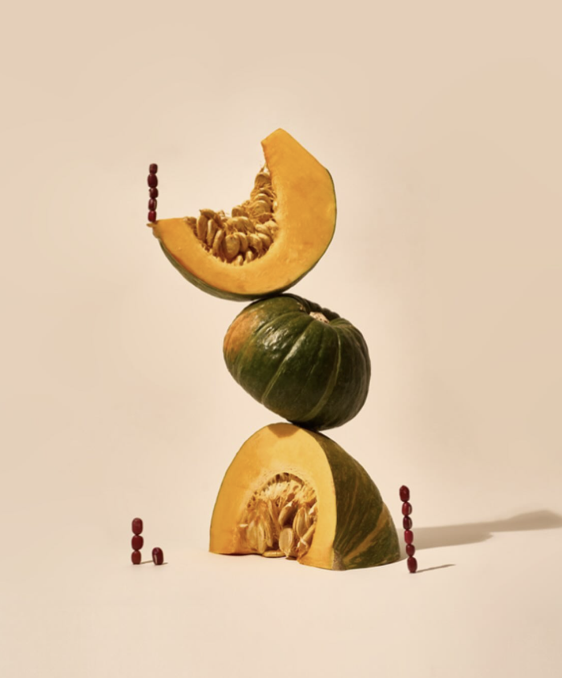

Welcome to Cafe Onion.
Focused on creating tasty pasteries by incorporating seasonal ingredients.

Bite into the essence of autumn with every taste of our handpicked apples. Each one bursts with a perfect balance of natural sweetness and a refreshing tang, complemented by a satisfying crunch.

With a smooth, tender texture and a subtle nutty finish, green pumpkins add a comforting depth to every dish. Perfectly suited for savory creations or hearty, rustic flavors, it captures the essence of wholesome, natural goodness. Each bite is a taste of the harvest, bringing warmth and richness to your plate.

Savor the taste of the garden with every bite of our perfectly ripe tomatoes. With a delicate balance of sweet and tangy notes, their sun-kissed juiciness brings a vibrant burst of flavor to any dish.